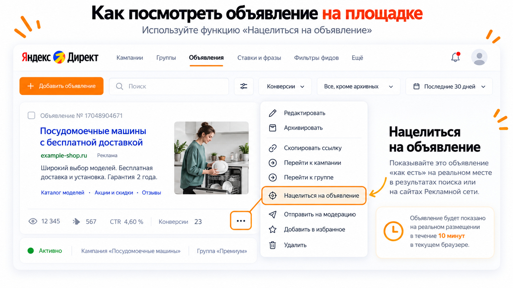
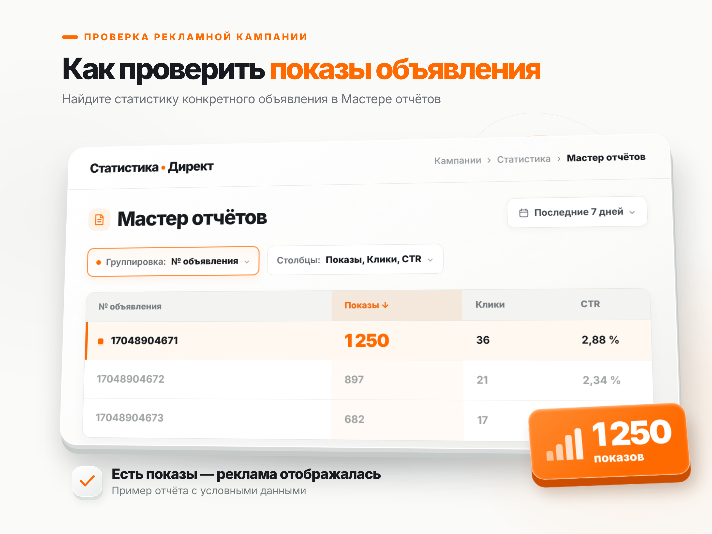

Блог о платном трафике
Как посмотреть объявление в Яндекс Директе и увидеть его в поиске
Посмотреть своё объявление в Яндекс Директе можно через предпросмотр в рекламном кабинете или с помощью функции «Нацелиться на объявление». Второй способ позволяет увидеть рекламу непосредственно в поисковой выдаче Яндекса или на площадках РСЯ.
Если же нужно проверить, действительно ли объявление показывается пользователям, лучше воспользоваться статистикой Директа. Отсутствие собственной рекламы в поиске ещё не означает, что кампания не работает.
Как посмотреть объявление в кабинете Яндекс Директа
Самый простой способ оценить внешний вид рекламы до запуска или после редактирования - открыть объявление в интерфейсе Директа.
Порядок действий:
- Авторизуйтесь в Яндекс Директе.
- Откройте раздел «Кампании».
- Выберите нужную рекламную кампанию.
- Перейдите на вкладку «Объявления».
- Откройте нужное объявление для просмотра или редактирования.
- Если для этого формата доступен предпросмотр, проверьте, как выглядят рекламные материалы.
В зависимости от типа объявления могут отображаться разные варианты размещения, изображения, заголовки, тексты и дополнительные элементы.
Важно: предпросмотр не гарантирует, что реклама будет выглядеть точно так же у каждого пользователя. Яндекс может менять состав элементов и оформление в зависимости от рекламного блока и устройства.
С 2026 года в Единой перфоманс-кампании вместо прежних текстово-графических объявлений используются комбинаторные. Директ формирует разные сочетания заголовков, текстов и изображений. Поэтому необходимо проверять доступные варианты оформления, а не ориентироваться только на один макет.
Подробнее о возможностях этого формата читайте в статье «Комбинаторные объявления Яндекс Директ».
Как увидеть своё объявление в реальном поиске Яндекса
Для просмотра рекламы непосредственно в поисковой выдаче предусмотрен специальный инструмент «Нацелиться на объявление».
Он позволяет временно настроить показ выбранного объявления в вашем браузере без списания рекламного бюджета за тестовые показы и клики.
Как включить нацеливание
- Откройте раздел «Кампании» в Яндекс Директе.
- Выберите работающую кампанию и перейдите к объявлениям.
- Найдите объявление со статусом «Идут показы».
- Откройте меню действий и выберите «Нацелиться на объявление».
- Разрешите использование cookie и нажмите «Нацелиться».
После этого функция будет действовать 10 минут в текущем браузере.

Как посмотреть объявление на поиске
После включения нацеливания:
- Откройте Яндекс в том же браузере.
- Введите поисковый запрос, соответствующий условиям показа объявления.
- Найдите рекламный блок, в котором появилось объявление.
- Оцените заголовок, текст, быстрые ссылки, изображения и общий внешний вид.
Нацеливание также поддерживается для товарной галереи. В этом случае нужно выполнить поиск соответствующего товара.
Если объявление не появилось, проверьте подходящие запросы и доступность рекламных мест. Само нацеливание не отменяет ограничений рекламных форматов и площадок.
Ограничения инструмента:
- Объявление должно пройти модерацию, а кампания - работать.
- Во время модерации изменений нацеливание может быть недоступно.
- Режим инкогнито использовать нельзя.
- Одновременно можно нацелиться только на одно объявление.
- Инструмент не поддерживает некоторые места размещения, например рекламу в Картах и динамические места на поиске.
Показы и клики, полученные при активном нацеливании, не учитываются в рекламной статистике и не оплачиваются.
Как посмотреть объявление на сайте РСЯ
Та же функция подходит для проверки рекламы в Рекламной сети Яндекса.
После включения нацеливания откройте сайт, на котором предусмотрены рекламные блоки РСЯ. Если есть подходящее место размещения, система сможет показать выбранное объявление.
Проверить стоит:
- правильно ли обрезается изображение;
- читаются ли заголовок и текст;
- заметна ли реклама на фоне другого контента;
- как выглядит рекламный блок на разных устройствах.
Не каждое объявление подходит для каждого блока. Например, графический баннер определённого размера может не соответствовать пропорциям рекламного места.
Список площадок, где уже показывалась реклама, можно найти в Мастере отчётов. Это удобная отправная точка для проверки.
Подробнее о размещениях: «Что такое РСЯ в Яндекс Директе».
Почему я не вижу своё объявление в поиске Яндекса
Предположим, вы рекламируете установку пластиковых окон. Кампания активна, объявления прошли модерацию, но при поиске фразы «купить пластиковые окна» вы не видите собственной рекламы.
Это не обязательно свидетельствует о проблеме.
1. Вы слишком часто ищете собственную рекламу
Яндекс учитывает вероятность взаимодействия конкретного пользователя с рекламой.
Если человек регулярно просматривает выдачу по одной тематике и не нажимает на объявления, система может прогнозировать для него низкую вероятность клика.
Если рекламодатель часто проверяет позиции собственных объявлений, алгоритм может перестать показывать ему такую рекламу в блоке премиум-показов.
Это не означает, что объявления исчезли из выдачи для остальных пользователей.
2. Объявление не выигрывает каждый аукцион
В Яндекс Директе нет гарантии, что объявление появится при каждом подходящем запросе.
Рекламный аукцион учитывает ставки, качество рекламы, прогноз кликабельности и другие параметры.
Даже при одинаковом запросе два пользователя могут увидеть разные рекламные объявления.
3. Не совпадают регион или время показа
Если реклама настроена на Москву, а вы ищете её из другого региона, объявление может не появиться.
На результат также влияют расписание, настройки аудитории и ограничения кампании.
Использование VPN способно изменить определяемое местоположение и повлиять на результаты проверки.
4. Реклама показывается в другом блоке
Объявления могут располагаться не только сверху результатов поиска, но и в середине или нижней части выдачи.
Кроме того, Директ использует разные варианты оформления рекламных блоков, поэтому одно и то же объявление не всегда выглядит одинаково.
Поможет ли режим инкогнито найти своё объявление
Режим инкогнито не гарантирует появления объявления.
Он ограничивает использование части данных текущей браузерной сессии, но не отключает рекламный аукцион, геотаргетинг и остальные условия показа.
Кроме того, при использовании функции «Нацелиться на объявление» инкогнито необходимо отключить, поскольку для работы инструмента используются cookie.
Поэтому проверять наличие рекламы лучше через инструменты самого Директа.
Как проверить, действительно ли объявление показывается
Самый надёжный способ подтвердить состоявшиеся показы - посмотреть статистику Яндекс Директа.
Для проверки конкретного объявления:
- Откройте «Статистика», затем «Мастер отчётов».
- Выберите период, например последние 7 дней.
- Добавьте группировку «№ объявления».
- При необходимости добавьте группировку по площадкам.
- Выберите метрики «Показы» и «Клики».
- Найдите нужное объявление в отчёте.
Если за выбранный период у объявления есть показы, значит реклама действительно демонстрировалась пользователям.
Пример: в отчёте указано 1250 показов и 36 кликов. Это означает, что объявления показывались, независимо от того, удалось ли рекламодателю лично увидеть их в поиске.
При необходимости можно добавить группировку «Поисковый запрос» или воспользоваться отдельным отчётом «Поисковые запросы», чтобы изучить фактические запросы пользователей.
Учтите, что статистика обновляется не мгновенно. В отчёте нужно проверять время последнего обновления данных.

Что делать, если у объявления ноль показов
Если статистика действительно показывает ноль, следует проверить настройки и состояние кампании.
| Что проверить | На что обратить внимание |
|---|---|
| Статус | Активны ли кампания, группа и объявление |
| Модерация | Одобрено ли объявление |
| Бюджет | Есть ли доступные средства и достаточный бюджет |
| Расписание | Разрешены ли показы в выбранное время |
| География | Соответствуют ли регионы целевой аудитории |
| Стратегия | Допускают ли настройки участие в аукционах |
| Предупреждения | Нет ли ошибок или ограничений в интерфейсе |
После включения рекламы или изменения настроек может потребоваться время на активизацию. В отдельных случаях этот процесс занимает до 180 минут.
Если все настройки корректны, но показы так и не начались, необходимо диагностировать стратегию, условия показа и ограничения кампании.
Частые вопросы
Можно ли посмотреть своё объявление в Яндексе бесплатно?
Да. Предпросмотр в кабинете и функция «Нацелиться на объявление» не требуют оплаты тестовых показов. В период действия cookie показы и клики по нацеленному объявлению не учитываются в статистике.
Почему объявление активно, но я не вижу его в поиске?
Причинами могут быть результаты рекламного аукциона, персональный прогноз кликабельности, геотаргетинг, расписание или особенности размещения. Проверьте фактические показы в отчётах.
Как посмотреть объявление конкурента?
Введите соответствующий коммерческий запрос в поиске Яндекса. Вы увидите рекламные объявления, отобранные для вашей поисковой выдачи. Состав рекламы у других пользователей может отличаться.
Как узнать, по каким запросам показывалась моя реклама?
Откройте отчёт «Поисковые запросы» в Яндекс Директе. В нём доступны поисковые запросы, условия показа и статистика. Часть малочастотных запросов может объединяться в общую строку.
Можно ли увидеть объявление сразу после запуска?
Не всегда. Объявление должно пройти модерацию и активизацию. Для нацеливания дополнительно требуется статус «Идут показы».
Итог
Чтобы посмотреть объявление в Яндекс Директе, используйте предпросмотр в кабинете. Чтобы увидеть рекламу непосредственно в поиске или РСЯ, воспользуйтесь функцией «Нацелиться на объявление».
Для проверки фактической работы кампании ориентируйтесь на статистику показов, а не на результат собственного поиска.
Главное правило: отсутствие рекламы на вашем экране не означает отсутствия показов у потенциальных клиентов.